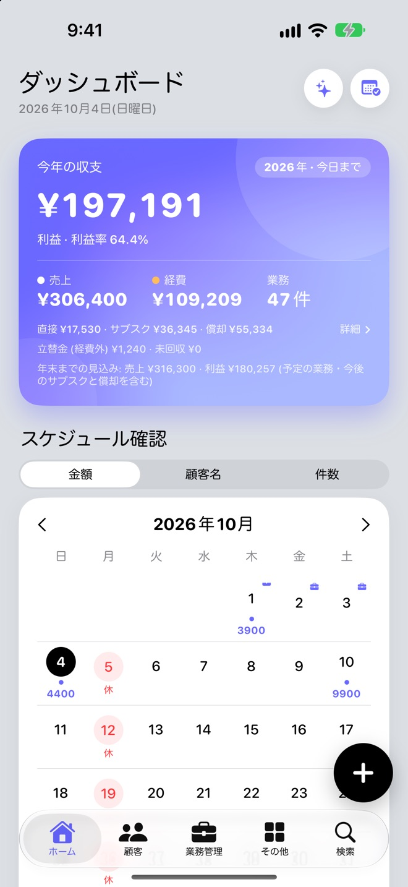
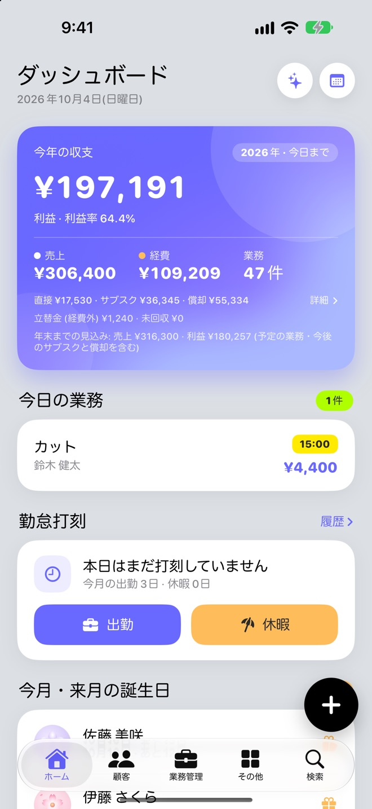
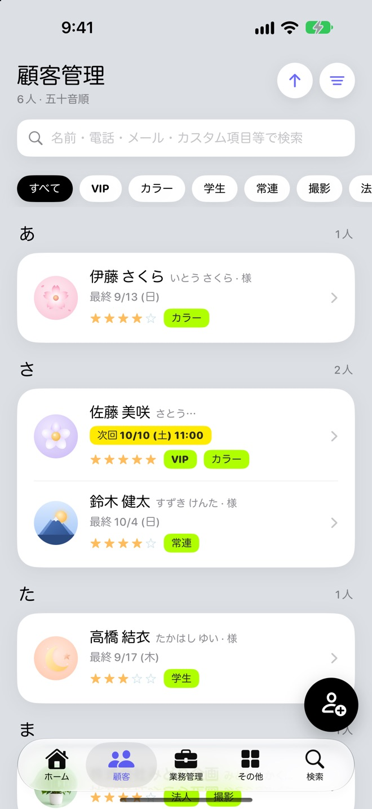
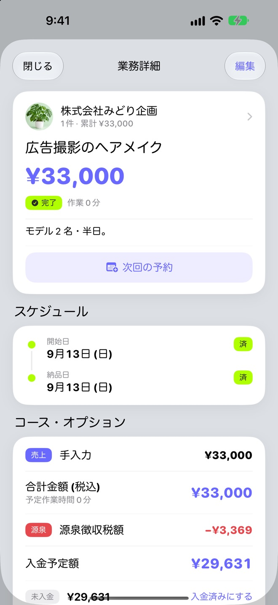
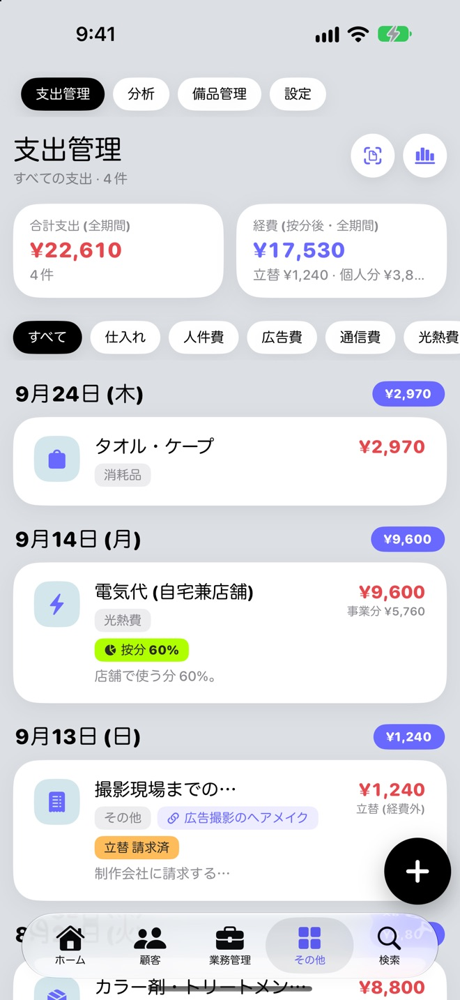
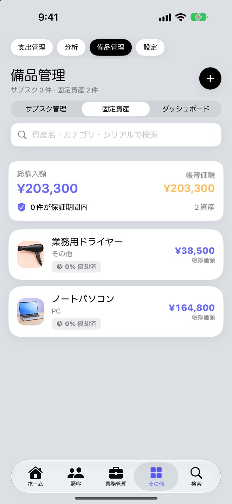
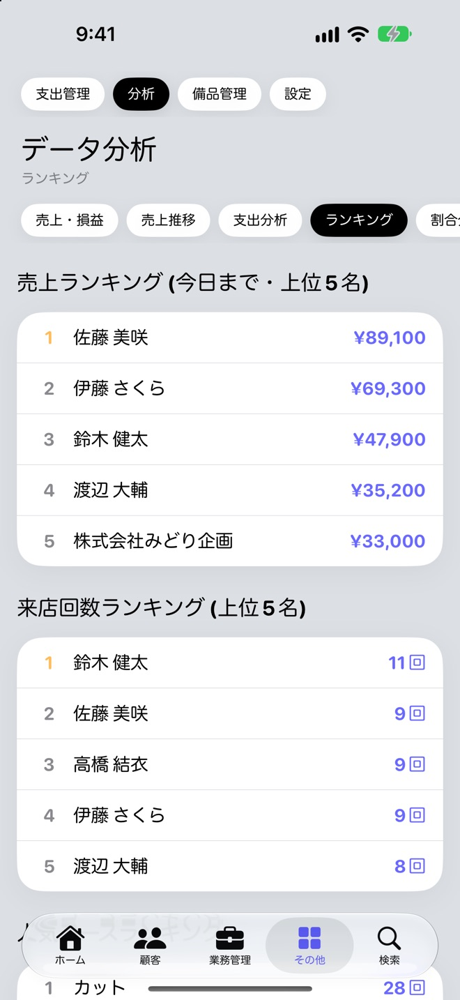

今年の収支と日ごとの売上を、
ホームで
ホームの収支は、日付が今日までの業務と経費から計算します。予定の業務を含めた年末までの見込みは、別に表示します。
- カレンダーは、日ごとの金額・お客様の名前・件数を切り替えて表示。定休日や臨時の休業日もひと目で
- 経費は、直接の支出・サブスク・償却費に分けて確認
- 今日の予約、勤怠の打刻、今月・来月が誕生日のお客様

予約はカレンダー、顧客はメモ帳、経費はレシートの束。ClieNote なら、お客様のカルテ・予約・売上・経費・機材の減価償却までをまとめて記録して、今年の利益がいつでもひと目でわかります。
App Store で見るiPhone・iPad（iOS 18 以上）／アカウント登録は不要です

カルテ・予約・売上が1人のお客様にまとまり、次回の予約も前回の来店日もすぐわかります。
売上・経費・利益を、今日までの実績で計算。予約を入れただけの金額は混ざりません。
源泉徴収・家事按分・立替金・減価償却。面倒な計算は、入力するだけで済みます。
サロン・ネイル・エステ・整体・撮影・デザインなど、ひとりで仕事をする個人事業主のために作りました。
ホームの収支は、日付が今日までの業務と経費から計算します。予定の業務を含めた年末までの見込みは、別に表示します。

連絡先・誕生日・評価・メモ・写真に加えて、アレルギーや好みなど、業種に合わせた項目を自由に作れます。

コースとオプションを選ぶだけで料金を計算します。その回だけの値引きや追加料金も、調整額として記録できます。

自宅兼店舗の光熱費は、事業で使った割合だけを経費に。お客様に請求する立替金は経費から外して、請求したかどうかを記録します。

月額・年額の契約は、料金の変更や解約を履歴つきで管理。ドライヤーやパソコンなどの固定資産は、減価償却の費用を年ごとに計算します。

売上・損益、月ごとの売上推移、支出の分析、お客様のランキング、メニューの割合。数字で振り返れます。

記録の手間を減らして、数字の間違いを防ぐ工夫を入れています。
架空のサロンのデータを読み込んで、登録する前に使い心地を確かめられます。試したあとは、設定からまとめて削除できます。
メモやメールからコピーした「¥12,000」「5万円」のような金額も、金額の欄に貼り付ければそのまま読み取ります。
削除したお客様や業務は、ゴミ箱に入ります。お客様を戻すと、一緒に削除した業務もまとめて戻ります。
撮影やデザインの請負など、決まったメニューがない仕事は、金額を直接入力して記録できます。
書き出した CSV を Excel や Numbers で直して、取り込み直せます。取り込む前には、自動でバックアップを残します。（PRO）
iPhone と同じアプリを iPad でも使えます。端末間の同期を購入すると、どちらの端末でも同じデータを使えます。
アカウント登録は不要です。データは端末の中に保存され、開発者を含め、外部のサーバーに送られることはありません。解析や広告の仕組みも入っていません。端末間の同期を購入した場合も、データはあなた自身の iCloud にだけ保存されます。
お客様と業務は10件まで、そのまま記録できます。件数が増えてきたら、買い切りの PRO 版へ。
お支払いなしで使える範囲
買い切り（1回のお支払い）
買い切り（PRO 版とは別のお支払い）
購入した機能は、同じ Apple アカウントのほかの端末でも「購入の復元」で使えます。
ClieNote は、日々の記録と集計のためのアプリです。確定申告書の作成や提出の機能はありません。レポートは申告の準備にお使いいただき、税務上の判断は税理士などの専門家にご相談ください。